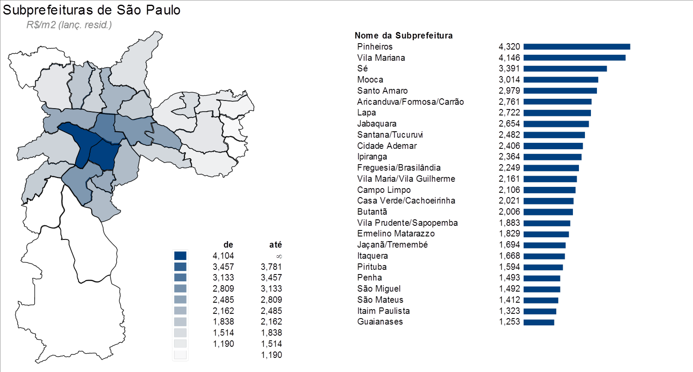

Cidade / Arquivo
Mapa das subprefeituras no Excel
Da planilha ao mapa das subprefeituras de São Paulo.
O explorador usa as 31 subprefeituras da série histórica de lançamentos residenciais.
Publicação original
Trabalhar com mapas, dados e apresentações sempre envolve alguma dificuldade decorrente da utilização de múltiplos softwares para realizar cada um das tarefas relacionadas à criação das imagens. Apenas considerando os mapas, existem diversos programas, alguns pagos outros de graça, para as mais diversas finalidades e com uma vasta gama de complexidade. Eu recorro invariavelmente ao OpenJump que é fácil de instalar e usar. Mas apesar da diversidade, na maior parte das vezes o que queremos é uma visualização rápida de alguns dados em um mapa simples e quase sempre os dados estão em uma planilha.
Há algum tempo me deparei com esse link que preenchia exatamente essa lacuna: um mapa dos estados brasileiros em excel. O mapa é colorido a partir de uma macro que utiliza uma escala de transparência para a cor escolhida, sendo essa escala associada aos dados que estão sendo visualizados (quanto maior o número mais intensa é a cor – i.e., menor a transparência associada a um determinado estado). Seguindo a mesma lógica (depois descobri que o mesmo site possui um passo-a-passo para criar mapas de Excel a partir de shapefiles), criei uma planilha com um mapa das subprefeituras do município de São Paulo. Para criar uma visualização do mapa a partir de um conjunto novo de dados, basta adicionar os dados correspondente a cada subprefeitura na aba “Dados”, clicar no botão atualizar da aba “Mapa” e depois selecionar o dado no seletor no canto superior esquerdo dessa mesma aba. É possível alterar a cor do mapa selecionando uma nova cor no botão “Escolher cor (mapa/gráfico)”. Na figura abaixo, exibi o “Valor Geral de Vendas dos Lançamentos Residenciais Verticais”, dividido pela “Área Total Lançada (em m²) dos Lançamentos Residenciais Verticais”, obtidos no site Infocidade da Prefeitura São Paulo.


Deixo abaixo um formulário para aqueles que quiserem maiores explicações sobre o funcionamento da planilha: